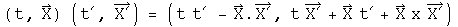
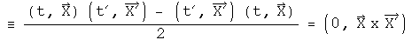
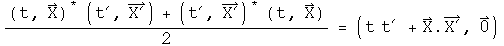

Inner and Outer Products of Quaternions
A good friend of mine has wondered what is means to multiply two quaternions together (this question was a hot topic in the nineteenth century). I care more about what multiplying two quaternions together can do. There are two basic ways to do this: just multiply one quaternion by another, or first take the transpose of one then multiply it with the other. Each of these products can be separated into two parts: a symmetric (inner product) and an antisymmetric (outer product) components. The symmetric component will remain unchanged by exchanging the places of the quaternions, while the antisymmetric component will change its sign. Together they add up to the product. In this section, both types of inner and outer products will be formed and then related to physics.
The Grassman Inner and Outer Products
There are two basic ways to multiply quaternions together. There is the direct approach.

I call this the Grassman product (I do not know if anyone else does, but I need a label). The inner product can also be called the symmetric product, because it does not change signs if the terms are reversed.


I have defined the anticommutator (the bold curly braces) in a non-standard way, including a factor of two so I do not have to keep remembering to write it. The first term would be the Lorentz invariant interval if the two quaternions represented the same difference between two events in space-time (i.e. t=t'=delta t,...). The invariant interval plays a central role in special relativity. The vector terms are a frame-dependent, symmetric product of space with time and does not appear on the stage of physics, but is still a valid measurement. A label for these three terms is space-times-time.
The Grassman outer product is antisymmetric and is formed with a commutator.


This looks like the cross product defined for two 3-vectors. It is unconventional because there necessarily must be the zero in the first position. To help mark this difference, call this the cross_q product, implying the result must fill in the four positions unlike the cross products in wide use.
The Euclidean Inner and Outer Products
Another important way to multiply a pair of quaternions involves first taking the conjugate of one of the quaternions. For a real-valued matrix representation, this is equivalent to multiplication by the transpose which involves flipping the sign of the 3-vector.


Form the Euclidean inner product.

The first term is the Euclidean norm if the two quaternions are the same (this was the reason for using the adjective "Euclidean"). The Euclidean inner product is also the standard definition of a dot product.
Form the Euclidean outer product.

The first term is zero. The vector terms are an antisymmetric product of space with time and the negative of the cross product.
Implications
When multiplying vectors in physics, one normally only considers the Euclidean inner product, or dot product, and the Grassman outer product, or cross product. Yet, the Grassman inner product, because it naturally generates the invariant interval, appears to play a role in special relativity. What is interesting to speculate about is the role of the Euclidean outer product. It is possible that the antisymmetric, vector nature of the space/time product could be related to spin. Whatever the interpretation, the Grassman and Euclidean inner and outer products seem destined to do useful work in physics.